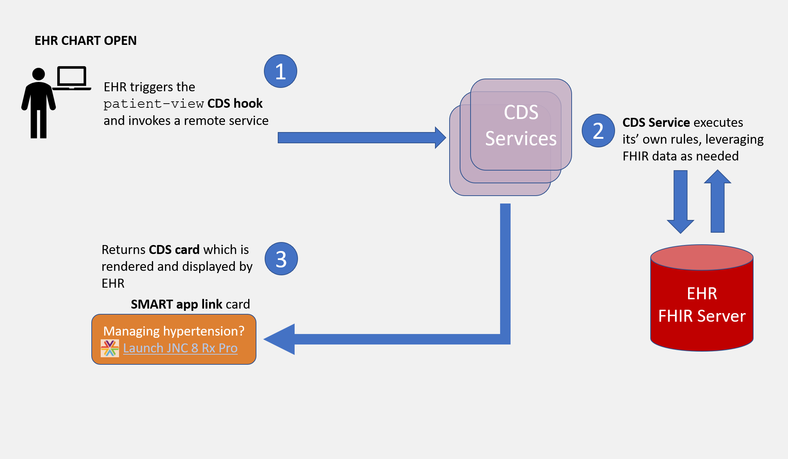
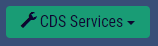
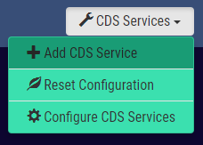
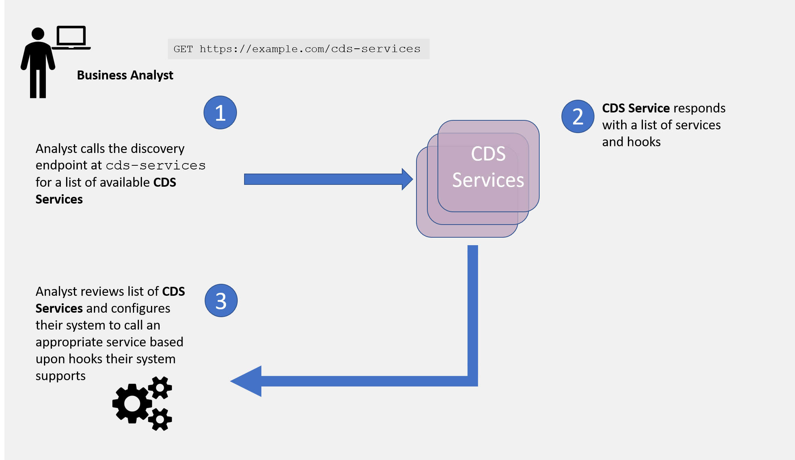
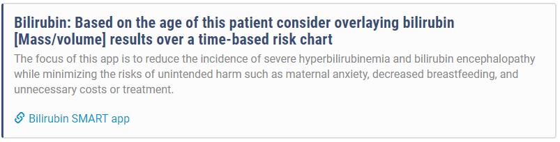

Quick Start¶
This quick start tutorial defines each of the actors and provides details for implementing the patient-view hook.
A CDS Hooks scenario typically includes two main actors: an CDS Client and a CDS Service, where the CDS Client may be an EHR, CPOE or other clinical workflow system. Below is an example interaction for the patient-view hook.

Building a CDS Service¶
A CDS Service is an external service that responds to CDS Client requests through cards. A card can optionally link to a SMART app. There are several steps to setting up a CDS Service:
- Create an endpoint for discovery
- Develop a service
- Test the service with the sandbox
- If applicable, create a SMART app (or borrow one)
- Test the service (and, if applicable, SMART app) with an CDS Client
This tutorial recommends implementing the CDS Hooks security model after successful open access testing.
Endpoint for discovery¶
The CDS Service must provide a stable endpoint for the CDS Client to discover the available services. A system must expose their services at {baseUrl}/cds-services. A service endpoint that supports the patient-view hook may return:
1 2 3 4 5 6 7 8 9 10 11 12 13 | |
The attributes available to describe a CDS Services is documented in the CDS Hooks specification.
Develop a service¶
With a stable open end point available it's time to complete development of a service. A CDS Service could provide information, a suggestion, or a SMART app link. The focus of the Argonaut CDS Hooks effort is a patient-view hook launching a SMART app so this guide will focus on the SMART app link.
A CDS patient-view hook could return the following card:
1 2 3 4 5 6 7 8 9 10 11 12 13 14 15 16 17 18 19 20 | |
Create a SMART App¶
You may already have created a SMART app prior to this step, but just in case this is a reminder. The SMART app is launched from the link returned in your service. If you want to borrow a SMART app, check out the app gallery.
Test service with a sandbox¶
The CDS Hooks community provides a publicly available sandbox to test your service.
Select the configure hooks:

Delete the existing hooks, and then do a quick add with a reference to your CDS Service:

After testing with the sandbox, you are ready to connect with an CDS Client.
Integrating CDS Services into a CDS Client¶
Build out following sections:
- Call discovery endpoint
- Invoke service on patient-view
- Support FHIR resource on CDS requests (context or pre-fetch)
- Expose non-secured FHIR server for testing
- Render card
- Launch SMART app
- Test with external CDS Service
This tutorial recommends implementing the CDS Hooks security model after successful open access testing.
Call discovery endpoint¶
The CDS discovery endpoint provides the list of services a CDS provider supports, and the hooks a service should be invoked on. A CDS Client may configure their system to support a set of hooks at a certain location in their users work flow, or build a dynamic capability to interact with a CDS Service provider within a work flow. For the best end-user experience, this guide recommends a business analyst configure which hooks a CDS Client will support.
Below is an example work flow where a business analyst accesses this list of available services by calling
GET https://example.com/cds-services
and then configures them in the system.

This image captures a business analyst reviewing services from one CDS provider. A business analyst may review services from multiple providers and configure appropriate services per user profiles.
Invoke service on patient-view hook¶
The patient-view hook is invoked when a patient chart is opened. It's one of the most basic since the logic doesn't have any prior workflow dependencies. The service called on the patient-view hook could be dependent on patient characteristics, for example: sex, problems in problems list, active medications, etc. The current version of the CDS Hooks specification allows the CDS Client to decide which characteristics to consider.
Support FHIR resource on CDS requests (context or pre-fetch)¶
Often a CDS Service will require additional information from the CDS Client to perform the decision support logic, or determine the appropriate SMART app to return. Prefetch provides the CDS Client the capability to pass a resource when invoking a service. For example, with a patient resource included a service could do a geography search for potential environmental risk factors. Below is an example request invoked on patient-view with a patient included:
1 2 3 4 5 6 7 8 9 10 11 12 13 14 15 16 17 18 | |
In some cases, additional information beyond what is included in the prefetch may be required. The CDS Service can request additional information using the FHIR REST APIs:
GET [base]/AllergyIntolerance?patient=[id]
It is recommended FHIR servers implement, and CDS Services follow, locale specific implementation guides. In the US, the recommended implementation guides to follow are the Argonaut Data Query Guide (DSTU2) and HL7 US Core (STU3 and R4). Each profile page within these implementation guides includes queries FHIR servers are required to support.
Expose non-secured FHIR server for testing¶
A non-secured FHIR server is important to support testing with a CDS Service. When the CDS Client moves a hook to production the system is expected to follow the guidelines in the security requirements.
Render card¶
The CDS Service will provide a response in the form a of a 'card'. Your CDS Client needs to be able to display the card.
Example card JSON:
1 2 3 4 5 6 7 8 9 10 11 12 13 14 15 16 | |
Example card rendered: 
Launch SMART app¶
For some CDS Services the end step will just display the card. For the patient-view hook discussed here, we are focused on launching a SMART app. The CDS Hooks guide places no additional constraints for launching a SMART app beyond those from SMART on FHIR.
Test with external CDS Service¶
No development is complete without testing with a CDS Service provider. Find a member in the community and test away.